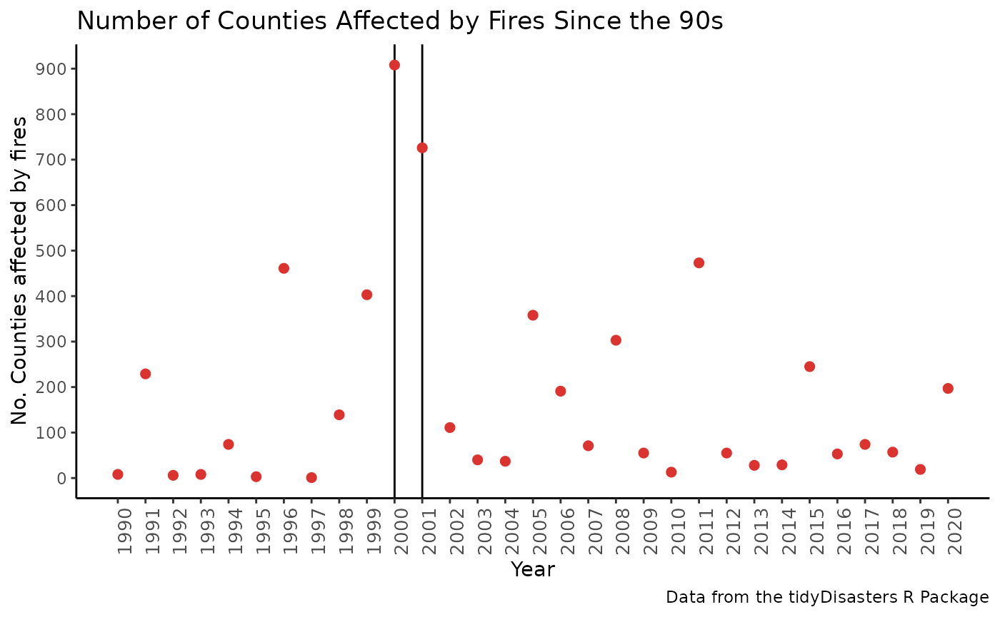

Using the Tidy Disaster Database
Catalina Cañizares, Mark J. Macgowan, Gabriel Odom
2022-03-16
Source:vignettes/basic_database_example_20221107.Rmd
basic_database_example_20221107.RmdtidyDisasters
The goal of tidyDisasters is to create a queryable data
set that unites information from the Centre for Research on the
Epidemiology of Disasters (Belgium) EMDAT, the National Consortium for the
Study of Terrorism and Responses to Terrorism (United States of America)
GTD, and the Federal Emergency
Management Agency (United States of America) FEMA;
three sources that complement each other. Standard information about the
types and classes of disasters is from the United Nation’s 2020 Hazard
Definition and Classification Review (UN Hazards). Whereas FEMA reports
the county-level location of a natural event, EMDAT estimates the number
of killed and wounded of that natural event, the GTD contains the
terrorism events, and the UN Hazards table contextualizes each disaster
by class.
Installation
Our package is currently being revised by CRAN. The development
version of tidyDisasters:: can be installed from this
GitHub repository by
Please note that using compiled code from GitHub may require your computer to have additional software (Rtools for Windows or Xcode for Mac). Also note that installing this development version may result in some errors. If you find problems, please submit a bug ticket.
Examples
This is a basic example which shows how to search for a disaster event. This code finds Hurricane Harvey and shows how it affected Texas in 2017.
library(tidyDisasters)
library(lubridate)
library(tidyverse)
data("disastDates_df")
data("disastCasualties_df")
data("disastLocations_df")
data("disastTypes_df")
disastTypes_df %>%
left_join(disastDates_df, by = "eventKey") %>%
left_join(disastCasualties_df, by = "eventKey") %>%
left_join(disastLocations_df, by = "eventKey") %>%
mutate(Year = year(eventStart)) %>%
filter(Year == 2017 & state == "TX" & incident_type == "Hurricane") %>%
distinct() %>%
rmarkdown::paged_table()This is another example that shows the number of counties affected by fires since the 90s: we observe the 2000-2001 Western United States wildfires.
fires_df <-
disastLocations_df %>%
left_join(disastTypes_df, by = "eventKey") %>%
left_join(disastDates_df, by = "eventKey") %>%
mutate(Year = year(eventStart)) %>%
filter(hazard_cluster == "Environmental degradation (Forestry)") %>%
group_by(state, county, Year) %>%
summarise(Fire = n() >= 1L, .groups = "keep") %>%
group_by(Year) %>%
summarise(Count = sum(Fire))
ggplot(fires_df) +
theme_classic() +
theme(axis.text.x = element_text(size = 10, angle = 90)) +
aes(x = Year, y = Count) +
labs(
title = "Number of Counties Affected by Fires Since the 90s",
caption = "Data from the tidyDisasters R Package",
y = "No. Counties affected by fires"
) +
scale_x_continuous(breaks = 1990:2020) +
scale_y_continuous(breaks = seq(0, 1000, by = 100)) +
geom_vline(xintercept = 2000) +
geom_vline(xintercept = 2001) +
geom_point(size = 2, color = "#DA3330")
Conclusion
This package aims at uniting available heterogeneously dispersed data from three different sources to improve information accessibility and analysis. As can be seen in this previous examples, by uniting the datasets of interest questions exploring the impact of natural disasters can be easily solved. Another advantage of this package is that the data can be used to relate mass casualties to their short and long-term consequences beyond the damage itself. Using this comprehensive database, it is possible to relate natural and man-made disasters in the US to other datasets of interest, such as mental and physical health outcomes, economic and political metrics, or other data sets of interest, simply by matching on state, county, and date range.